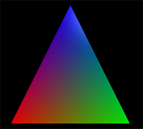

A Mesh of Triangles¶
{kind=link}
All 3D graphical objects, even spheres, are made of triangles. One way to design your own object is to build it out of triangles. A triangle requires three vertex objects. The appearance of a triangle, based on the colors of its vertices and the lights provided, is calculated using the normals to the triangle: vectors pointing away from the surface of the triangle. In the simplest case, the normal at each vertex is perpendicular to the surface of the triangle, as shown in the figure below.

A triangle, showing the three vertices and the normal to each vertex.¶
As is evident in the figure above, if adjacent vertices differ in color, the colors are blended smoothly between the two vertices.
Any surface can be approximated by a mesh of triangles, and the shape of the surface can be changed dynamically. See the example programs Plot3D and Rug.
vertex¶
- myvertex = vertex( pos=vec(1,0,0), normal=vec(0,0,1), color=color.green )
- Parameters:
pos (vector) – The 3D position of the vertex.
normal (vector) – In the simplest case, a vector perpendicular to the plane of the triangle of which the vertex is a component. Default: <0,0,1>. For vertices at positions p0, p1, and p2, the normal to the triangle is
norm( cross( (p1-p0), (p2-p1) ) )color (vector) – The color of this vertex. If adjacent vertices differ in color, the colors will be blended smoothly between the vertices.
opacity (scalar) – Opacity of the vertex.
texpos (vector) – A 3D vector whose x and y components give texel coordinates. Currently z must be 0. See Texture Coordinates.
bumpaxis (vector) – The direction of the x-axis of the bumpmap at that location. Default <1,0,0>. See Texture Coordinates.
shininess (scalar) – Default 0.6; Range 0-1.
emissive (boolean) – Default False. Object glows, losing all shading, if True.
triangle¶
Order of vertices in a triangle¶
Vertices of a triangle must be specified in the correct order. A right-hand rule is useful: point your right thumb in the direction of the normal, and your fingers curl from v0 to v1 to v2. To put it another way, looking down the normals from above, going from v0 to v1 to v2 should go counterclockwise.
- T = triangle( v0=myvertex0, v1=myvertex1, v2=myvertex2 )
or
- T = triangle( vs = myvertexlist )
- Parameters:
v0 (vertex) – A vertex of the triangle.
v1 (vertex) – The adjacent vertex, using the right-hand rule.
v2 (vertex) – The adjacent vertex, using the right-hand rule.
vs (list) – A list of three vertex objects in order, using the right-hand rule. An alternative to specifying each vertext separately.
texture (class.attribute or path) – The texture to be applied to the triangle. Alignment uses texpos from vertices.
visible (boolean) – If False, triangle will not be visible.
bumpmap (class.attribute or path) – Bumpmap associated with a texture.
a = vertex(pos=vec(-1,-1,0), color=color.red)
b = vertex(pos = vec(1,-1,0), color=color.green)
c = vertex(pos = vec(0,1,0), color=color.blue)
t = triangle(v0=a, v1=b, v2=c)
The code above produces this:
The only way to rotate a triangle is to rotate each vertex.
A tetrahedron made from four triangles. The triangles do not share vertices; each triangle needs three vertices of the same color, with normals perpendicular to the surface.¶
Smoothing joints¶
A single object can be composed of many triangles. Two adjacent triangles can share vertices. However, if the triangles don’t lie in the same plane, the joint will be visible unless it is smoothed. To smooth a joint, the normals of the two surfaces must be averaged (n1+n2)/2, and applied to all shared vertices. This will work best if the angle between the surfaces is small.
For example, a sphere is made of many triangles that share vertices with their neighbors; the normals of each vertex are the average of the normals of the normal vectors for all the triangles sharing the vertex.
quad¶
A quad is a quadrilateral that consists of four vertex objects; sometimes it is convenient to specify quads instead of triangles, but the quads are actually broken into triangles before rendering.
Order of vertices in a quad¶
Vertices of a quad must be specified in the correct order. The right-hand rule described for triangles applies also to quads: point your right thumb in the direction of the normal, and your fingers curl from v0 to v1 to v2 to v3. To put it another way, looking down on the normals from above, going from v0 to v1 to v2 to v3 should go counterclockwise.
- Q = quad( vs = [a, b, c, d] )
or
- Q = quad( v0 = a, v1 = b, v2 = c, v3 = d )
- Parameters:
v0 (vertex) – A vertex of the quad.
v1 (vertex) – The adjacent vertex, using the right-hand rule.
v2 (vertex) – The adjacent vertex, using the right-hand rule.
v3 (vertex) – The adjacent vertex, using the right-hand rule.
vs (list) – A list containing all four vertices in order–an alternative to specifying all four separately.
The only way to rotate a quad is to rotate each vertex.
Texture Coordinates¶
In order to apply a texture or a bumpmap to a mesh, it is necessary to specify how the texture or bumpmap should be positioned on the mesh. Each vertex has attributes texpos and bumpaxis to convey this information. You might want the texture to occupy only a portion of the object, or be stretched or distorted in some way. This is done by specifying “texel” coordinates, given as texpos vectors in the vertex objects.
Texel coordinates for a surface texture are specified by an “x” and a “y”, both ranging from 0 to 1 if the entire texture is to be displayed, left to right and bottom to top. (In many discussions texel coordinates are referred to as “u” and “v”, or as “s” and “t”.) In anticipation that WebGL will eventually enable 3D textures, which permit filling a textured volume, VPython uses a vector, but requires the third component of texpos vectors to be zero.
For example, to fill a quad with a texture, the texpos vectors in the vertex objects v0, v1, v2, and v3 would be vec(0,0,0), vec(1,0,0), vec(1,1,0), vec(0,1,0), no matter what the 3D pos attributes are. If you want only the lower quarter of the texture to fill the quad, the texpos vectors would be vec(0,0,0), vec(0.5,0,0), vec(0.5,0.5,0), vec(0,0.5,0). Note that <0,0,0> is at the lower left, and <1,1,0> is at the upper right.